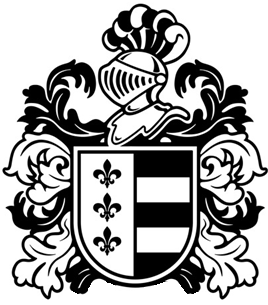

Ayuntamiento de ResconorioResconorio
En Resconorio, trabajamos para equilibrar el desarrollo sostenible con la preservación de nuestra rica herencia cultural montañesa. Desde la gestión responsable de nuestros bosques hasta iniciativas de energía limpia, construimos un futuro donde nuestras generaciones puedan seguir disfrutando de estos valles y cumbres.
Descubre Resconorio
Situado en el corazón de los Alpes, Resconorio es un pueblo donde la tradición se encuentra con la innovación. Conocido por sus festivales de montaña, su gastronomía auténtica y su compromiso con el turismo sostenible, ofrece a visitantes y residentes una experiencia única de vida en armonía con la naturaleza.
Nuestro Territorio en Cifras
Bosque Protegido
3,200 hectáreas
Picos Mayores a 2000m
12 picos
Kilómetros de Senderos
85 km señalizados
Población
1.245 habitantes
Explora Resconorio
Descubre más sobre nuestra rica historia, cultura y patrimonio a través de estas secciones especializadas.
Galería Fotográfica


Te Invitamos a Conocernos
Ya seas visitante buscando desconexión en la naturaleza, nuevo residente atraído por nuestra calidad de vida, o vecino de toda la vida, aquí encuentras espacio para pertenecer, contribuir y crecer en armonía con nuestro entorno de montaña.